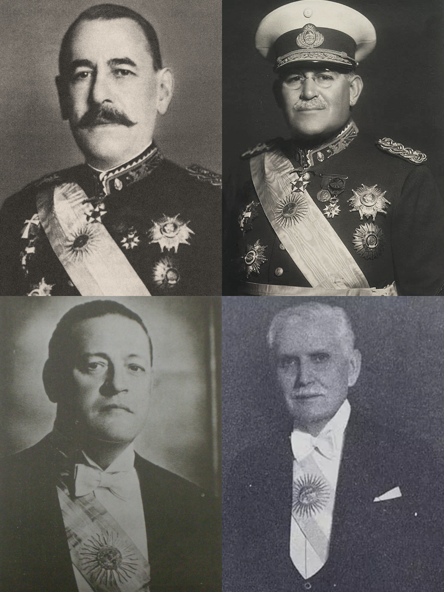

Introducción

La década de 1930 constituye uno de los períodos más importantes de la historia argentina. Durante estos años se produjeron profundas transformaciones económicas, políticas y sociales que modificaron el rumbo del país.
El comienzo de esta etapa estuvo marcado por la crisis económica mundial iniciada en 1929 y por el golpe de Estado de 1930 que derrocó al presidente Hipólito Yrigoyen. Ambos acontecimientos influyeron de forma decisiva en la vida nacional.
El período comprendido entre 1930 y 1943 es conocido tradicionalmente como la Década Infame. Esta denominación hace referencia a las prácticas fraudulentas utilizadas por los gobiernos conservadores para mantenerse en el poder y limitar la participación democrática.
El mundo antes de la crisis
Durante la década de 1920 la economía mundial experimentó un crecimiento importante. Estados Unidos se convirtió en la principal potencia económica y financiera del planeta.
Muchas empresas aumentaron su producción y millones de personas invirtieron dinero en la Bolsa de Nueva York. Sin embargo, gran parte de ese crecimiento estaba basado en la especulación financiera.
Numerosos inversores compraban acciones esperando que su valor continuara aumentando indefinidamente. Esta situación generó una enorme burbuja especulativa.
La crisis de 1929
El 24 de octubre de 1929 tuvo lugar una fuerte caída de las acciones en la Bolsa de Nueva York. Este acontecimiento es conocido como el Jueves Negro.
Miles de inversores intentaron vender sus acciones al mismo tiempo, provocando un derrumbe financiero que afectó rápidamente a la economía estadounidense.
La crisis se extendió luego a Europa y al resto del mundo. Bancos, industrias y empresas quebraron, mientras el desempleo aumentó de manera significativa.
Los países comenzaron a reducir sus importaciones y a proteger sus mercados internos. Como consecuencia, disminuyó el comercio internacional.
Consecuencias para Argentina
Argentina dependía en gran medida de la exportación de productos agropecuarios como carne, trigo, maíz y lino. Por ese motivo la caída del comercio mundial afectó gravemente a la economía nacional.
Los precios agrícolas descendieron, disminuyeron las exportaciones y se redujeron los ingresos provenientes de las ventas al exterior.
Muchas actividades vinculadas al campo sufrieron pérdidas, mientras que el desempleo comenzó a crecer en distintas regiones del país.
El impacto económico obligó a modificar políticas que habían predominado desde fines del siglo XIX.
La situación política antes de 1930
Hipólito Yrigoyen había asumido su segundo mandato presidencial en 1928. Sin embargo, enfrentó una fuerte oposición de sectores conservadores, grupos empresarios, parte de las Fuerzas Armadas y numerosos medios de prensa.
La crisis económica debilitó aún más su gobierno y favoreció las críticas hacia su gestión.
Los opositores sostenían que el gobierno era incapaz de resolver los problemas económicos surgidos tras la crisis internacional.
El golpe de Estado de 1930
El 6 de septiembre de 1930 un grupo de militares encabezados por José Félix Uriburu derrocó al presidente Hipólito Yrigoyen.
Este acontecimiento marcó el primer golpe de Estado exitoso del siglo XX en Argentina y constituyó un punto de inflexión en la historia política del país.
El nuevo gobierno suspendió garantías constitucionales, intervino provincias y persiguió a distintos opositores políticos.
¿Qué fue la Década Infame?
La expresión Década Infame se utiliza para describir el período comprendido entre 1930 y 1943.
Durante esos años predominaron gobiernos conservadores que recurrieron al fraude electoral para asegurar su continuidad en el poder.
También fue una etapa de cambios económicos importantes, debido al avance de la industrialización y a una mayor intervención del Estado.
Principales presidentes del período
- José Félix Uriburu (1930-1932).
- Agustín P. Justo (1932-1938).
- Roberto M. Ortiz (1938-1942).
- Ramón Castillo (1942-1943).
Características generales de la década
- Fraude electoral sistemático.
- Predominio de grupos conservadores.
- Intervención creciente del Estado.
- Crisis del modelo agroexportador.
- Desarrollo de industrias nacionales.
- Migraciones internas hacia las ciudades.
- Crecimiento sindical.
- Expansión del mercado interno.
Transformaciones económicas
A pesar de las dificultades iniciales, la crisis generó condiciones para que comenzaran a desarrollarse nuevas actividades industriales.
La reducción de las importaciones incentivó la fabricación local de muchos productos que anteriormente llegaban desde el exterior.
Este proceso es conocido como Industrialización por Sustitución de Importaciones y permitió el crecimiento de numerosas fábricas nacionales.
Transformaciones sociales
Las ciudades crecieron debido a las migraciones internas provenientes de distintas regiones del país.
Miles de personas buscaron trabajo en centros industriales como Buenos Aires, Rosario y Córdoba.
Esta situación provocó importantes cambios en la composición social de las áreas urbanas.
Transformaciones culturales
Durante la década de 1930 la radio se convirtió en uno de los principales medios de comunicación masiva.
También se produjo una expansión del cine nacional y de expresiones artísticas vinculadas al tango.
Estas manifestaciones contribuyeron a consolidar una cultura urbana cada vez más difundida.
Línea de tiempo
- 1929: Crisis económica mundial.
- 1930: Golpe de Estado contra Yrigoyen.
- 1930: Creación de la CGT.
- 1932: Asume Agustín P. Justo.
- 1933: Firma del Pacto Roca-Runciman.
- 1935: Creación del Banco Central.
- 1938: Asume Roberto M. Ortiz.
- 1940: Ortiz abandona el gobierno por enfermedad.
- 1942: Asume Ramón Castillo.
- 1943: Nuevo golpe militar.
Conclusión
La década de 1930 representó una etapa compleja para Argentina. La crisis económica obligó a replantear el funcionamiento de la economía y generó nuevas formas de intervención estatal.
Al mismo tiempo, el fraude político limitó la participación democrática y favoreció la permanencia de sectores conservadores en el poder.
Sin embargo, también se produjeron transformaciones económicas y sociales que contribuyeron al crecimiento industrial y a la configuración de una nueva realidad urbana que tendría gran importancia en las décadas posteriores.